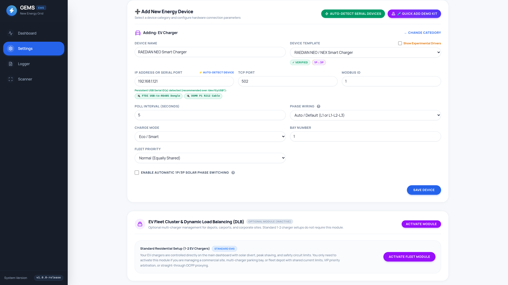

Ondersteunde Toesteltemplates & Stapsgewijze Configuratiegidsen
GEMS bevat 180 ingebouwde hardwaretemplates voor meer dan 100 toonaangevende fabrikanten van zonne-omvormers, thuisbatterijen, EV-laadpalen, digitale slimme meters, lineaire zonneboilers, SG-Ready warmtepompen en slimme relais.


Universele 4-stappen koppelworkflow voor toestellen
Het toevoegen en configureren van elk toestel in GEMS verloopt via een eenvoudig, volledig via de webinterface gestuurd proces in 4 stappen zonder configuratiebestanden aan te raken:
Fysieke aansluiting & lokaal netwerk
Sluit uw toestel aan via Ethernet LAN, Wi-Fi, een RS-485-bus of een USB P1-kabel. Zorg dat het toestel en GEMS zich op hetzelfde lokale subnet bevinden. Gebruik de ingebouwde Scanner (in het zijmenu) om direct het IP-adres en de MAC OUI-fabrikant te vinden.
Voorbereiding in fabrikant-app of toestel
Activeer op het toestel of in de mobiele app van de fabrikant het communicatieprotocol: schakel Modbus TCP in (bijv. in Huawei FusionSolar, SMA Speedwire of SolarEdge SetApp), verwijs de OCPP Server URL van uw laadpaal naar GEMS, of zet de Lokale API aan op uw HomeWizard- of Shelly-toestel.
Toestel toevoegen in de GEMS-webinterface
Ga in GEMS naar Instellingen → Toestellen → + Nieuw energietoestel toevoegen. Kies de categorie (Omvormers & Zonne-energie, EV-laadpalen, Net & Slimme Meters of Slimme Relais), selecteer uw hardwaretemplate, vul het IP-adres/poort of de ChargeBox ID in en klik op Opslaan.
Controleer de realtime uitleesstatus
De achtergrondservice begint uw hardware onmiddellijk uit te lezen. Controleer dat de toestelkaart een groene status ● Online toont. Open het Dashboard om de live geanimeerde energiestromen te bekijken en verifieer de registerwaarden in het Logboek.
1. Zonne- & Hybride Omvormers (24 Templates)
Omvormertemplates communiceren rechtstreeks via Modbus TCP (Ethernet / Wi-Fi-dongle), RS-485, SunSpec-standaarden of lokale HTTP-API's. Ze meten realtime zonneproductie (PV), batterijlading (SOC %), laad-/ontlaadvermogen in Watt en ondersteunen actieve terugregeling (curtailment).

| Merk / Model | Protocol | Standaardpoort | Standaard Slave ID | Batterij-ondersteuning | Terugregeling |
|---|---|---|---|---|---|
| Huawei SUN2000 (L1/M1/M2/M3/MB0) | Modbus TCP (SDongleA/SmartLogger) | 502 |
1 (of 2) |
Ja (LUNA2000) | Ja |
| SMA Sunny Boy / Tripower / Storage | Modbus TCP (Speedwire / SunSpec) | 502 |
126 (of 3) |
Ja (BYD/LG) | Ja |
| Solis Hybrid (S5 / S6 1- & 3-fasig) Primaire Referentie | Modbus TCP | 502 (of 8899) |
1 |
Ja | Ja |
| Solis Retrofit (RAI / S6-EA AC-opslag) Primaire Referentie | Modbus TCP | 502 (of 8899) |
1 |
Ja (Easyway 5200 / 48V LV) | Ja |
| Fronius Gen24 / Symo / Primo | Modbus TCP (SunSpec) | 502 |
1 |
Ja (BYD HVS/HVM) | Ja |
| GoodWe Hybrid (ET / EH / ES / EM) | Modbus TCP / UDP | 502 (of 8899) |
247 |
Ja | Ja |
| Growatt (SPH / MIN / MOD / MID) | Modbus TCP (ShineLAN-X) | 502 |
1 |
Ja | Ja |
| SolarEdge 3-fasig & 1-fasig | Modbus TCP (SunSpec SetApp) | 1502 (of 502) |
1 |
Ja (Energy Bank) | Ja |
| SolaX Hybrid (X1 / X3 Gen 2/3/4) | Modbus TCP (Pocket LAN/Wi-Fi) | 502 |
1 |
Ja (Triple Power) | Ja |
| SofarSolar (HYD / G3 / AMASS) | Modbus TCP | 8899 (of 502) |
1 |
Ja | Ja |
| Sungrow Hybrid (SH5.0 - SH10RT) | Modbus TCP | 502 |
1 |
Ja (SBR096-256) | Ja |
| Victron GX / MultiPlus-II | Modbus TCP (Venus OS) | 502 |
100 (GX) / 228 |
Ja (Victron ESS) | Ja |
| Deye / Sunsynk Hybrid | Modbus TCP (LAN/Wi-Fi Stick) | 502 (of 8899) |
1 |
Ja | Ja |
| FoxESS Hybrid (H1 / H3 / H3-Pro) | Modbus TCP | 502 |
1 (of 247) |
Ja (ECS/Mira) | Ja |
| SAJ eSolar (H1 / H2 / R5 / R6) | Modbus TCP | 502 |
1 |
Ja (B1/B2) | Ja |
| Senergy Hybrid (SE Series) | Modbus TCP | 502 |
1 |
Ja | Ja |
| Sigenergy SigenStor (5-in-1 ESS) | Modbus TCP | 502 |
1 |
Ja (Sigen Battery) | Ja |
| Enerlution Hybrid ESS | Modbus TCP | 502 |
1 |
Ja | Ja |
| Alpha ESS Storion (SMILE5/T10) | Modbus TCP | 502 (of 8502) |
85 |
Ja | Ja |
| Anker SOLIX X1 Hybrid | Modbus TCP | 502 |
1 |
Ja | Ja |
| Afore Hybrid (AF-T / AF-S) | Modbus TCP | 502 |
1 |
Ja | Ja |
| Marstek Storage (Venus / Jupiter) | Modbus TCP | 502 |
1 |
Ja | Ja |
| LG ESS Home (8 / 10 / 15) | Lokale HTTP REST | 80 / 443 |
— | Ja | Ja |
| Enphase IQ Gateway / Envoy | Lokale HTTPS REST (Auto-JWT) | 443 / 80 |
— | Ja (IQ Battery) | Enkel uitlezing |
Stapsgewijze configuratiegidsen voor populaire omvormers
Solis S5 / S6 Hybride & Retrofit Omvormers (Primaire Referentie)
Template: solis_hybrid / solis_retrofit- Fysieke / LAN-verbinding: Verbind de Solis COM RS-485-poort rechtstreeks met een USB-naar-RS485-adapter op de GEMS-controller (aanbevolen voor sub-seconde respons) of plaats een Solis S2-WL-ST LAN-stick met lokale Modbus TCP geactiveerd op poort
502(of8899), Slave ID1. - Externe batterijsturing vrijgeven: Controleer in het Solis-scherm of via het lokale SolisCloud Bluetooth-inbedrijfstellingsmenu dat Slave-adres
1(9600 8N1voor RS-485) ingesteld staat en externe EMS-sturing toegestaan is. - Toevoegen in GEMS: Ga naar Instellingen → Toestellen → + Nieuw energietoestel toevoegen.
- Categorie: Omvormers & Zonne-energie
- Template: Solis S5/S6 Hybrid Inverter & Storage (of Solis Retrofit voor AC-gekoppelde batterijopslag)
- Toestelnaam:
Solis S6 Hybrid Inverter - Endpoint: Vul het LAN-IP in (bijv.
192.168.1.120:502) of selecteer het vaste pad/dev/serial/by-id/*| Modbus ID:1 - Nominaal vermogen & Batterijcapaciteit: Vul het AC-vermogen in (bijv.
10.0 kW), vink Battery Connected? aan en vul de bruikbare batterijcapaciteit (kWh) in.
- Controleren: Klik op Opslaan. De status springt op ● Online met live PV-productie, batterij-SoC %, dynamische BMS-limieten en actieve terugregeling.
Huawei SUN2000 Hybride Omvormers (met LUNA2000-batterij)
Template: huawei_inverter- Activeer Modbus TCP op de SDongleA: Open de Huawei FusionSolar-app als installateur. Ga naar Device Management → Dongle → Set Parameters → Modbus TCP. Stel in op Enable (Unrestricted) en bevestig dat poort
502geopend is. - Netwerkverbinding: Verbind de SDongleA via Ethernet of Wi-Fi met uw router. Zoek het IP-adres op (bijv.
192.168.1.105) via het tabblad Scanner in GEMS. - Toevoegen in GEMS: Klik in GEMS op Instellingen → Toestellen → + Nieuw energietoestel toevoegen.
- Categorie: Omvormers & Zonne-energie
- Template: Huawei Hybrid Inverter
- Toestelnaam:
Huawei SUN2000 - Host-IP:
192.168.1.105| Poort:502| Modbus ID:1(of2in cascade) - Nominaal vermogen (kW): Vul het AC-vermogen van de omvormer in (bijv.
6.0) - Allow Curtailment: Vink aan voor Nederlandse nul-export of terugregeling bij negatieve prijzen
- Controleren: Klik op Opslaan. Binnen 5 seconden schakelt de status naar groen ● Online. Zonneproductie, batterij-SOC % en laad-/ontlaadvermogen verschijnen op het Dashboard.
Enerlution Hybride Omvormers & LiFePO4 Batterijopslag (LV & HV)
Template: enerlution_inverter- Batterij- & slimme-meterbekabeling: Schakel 51,2V laagspanningspakketten (
LFPWall-5000,LFPWall-10K-V2,Roller-16K) parallel op eenfasigeHY / L3–L6-omvormers, of stapel hoogspanningsblokken (GroundHV-2500,GH02-5324+ PDU/BCU) op driefasigeHYTH-omvormers. Verbind Master/PDUCAN(Pin 4CAN-H, Pin 5CAN-L) met OmvormerBMSen sluit deCHINT DTSU666(klemmen 24/25) ofEastron SDM630aan op Adres1. - Inbedrijfstelling in Enerlution-app: Selecteer
Lithium-Ion (CAN), zetEMS Mode = Self-Consumption, zetMinimum SOC = 10%en laat statischeActive Power / Export Control = Disabled / Unlimitedstaan zodat GEMS dynamisch op 1 Watt nauwkeurig kan terugregelen. - Toevoegen in GEMS: Detecteer automatisch via de Scanner (IEEE MAC OUI's
70:B3:D5/E4:5F:01) of kies Omvormers & Zonne-energie → Enerlution Hybrid Inverter op Poort502(of USB-RS4859600 8N1), Slave ID1, vul het exacte AC-vermogen in kW in, vink Allow Curtailment aan en geef de aangesloten batterijcapaciteit (kWh) op.
SMA Sunny Boy / Sunny Tripower / Sunny Island
Template: sma_inverter- Activeer Modbus & SunSpec: Open de SMA Web-interface in uw browser met het installateurswachtwoord. Ga naar Toestelparameters → Externe communicatie → Modbus → TCP-server. Activeer de TCP-server en controleer Poort 502. Stel de Unit ID in op
126(standaard) of3. - Toevoegen in GEMS: Ga in GEMS naar Instellingen → Toestellen → + Nieuw energietoestel toevoegen.
- Categorie: Omvormers & Zonne-energie
- Template: SMA Sunny Boy / Tripower
- Host: IP van de SMA-omvormer (bijv.
192.168.1.110) | Poort:502| Modbus ID:126 - Nominaal vermogen (kW): bijv.
8.0
- Controleren: De status springt naar ● Online. Actuele opwekking en gekoppelde batterijtelemetrie stromen direct naar het Dashboard.
SolarEdge Omvormers (1-fasig & 3-fasig met SetApp)
Template: solaredge_inverter / solaredge_3phase- Activeer SunSpec in SetApp: Open de mobiele SolarEdge SetApp, verbind met de Wi-Fi-hotspot van de omvormer en ga naar Communicatie → Modbus TCP. Zet deze op Ingeschakeld en stel de poort in op
1502(standaard voor SolarEdge) of502. Controleer dat Device ID op1staat. - Toevoegen in GEMS: Kies template SolarEdge Inverter (1-fasig) of SolarEdge 3-Phase Inverter. Vul Host-IP, Poort
1502en Modbus ID1in. - Controleren: Realtime SunSpec-telemetrie wordt onmiddellijk ingelezen door GEMS.
Victron GX (Cerbo GX / MultiPlus-II / Venus OS)
Template: victron_inverter- Activeer Modbus TCP in Venus OS: Open de Victron Remote Console (via browser of Touch 50/70). Ga naar Instellingen → Services → Modbus TCP en schakel deze AAN.
- Toevoegen in GEMS: Kies template Victron Inverter/GX. Vul Host-IP, Poort
502en Modbus ID100(systeemoverzicht) of228(netomvormer) in.
Sungrow Hybride Omvormer (SH5.0 - SH10RT)
Template: sungrow_inverter- Rechtstreekse LAN-poortaansluiting: Sluit voor stabiele en snelle Modbus TCP-communicatie uw Ethernetkabel rechtstreeks aan op de interne LAN RJ45-poort van de omvormer (onder de onderste afdekkap) in plaats van op de externe WiNet-S dongle.
- Toevoegen in GEMS: Kies Sungrow Inverter. Vul Host-IP, Poort
502en Modbus ID1in.
Enphase IQ Gateway / Envoy-S (Firmware D5, D7 & D8)
Template: enphase_envoy (Enkel uitlezing)- 100% Lokale LAN-telemetrie (geen Cloud Developer API vereist): GEMS leest de Enphase IQ Gateway rechtstreeks uit op uw lokale netwerk via HTTPS (Poort
443op Firmware D7/D8; Poort80op oudere Envoy-S D5) voor live micro-omvormer PV-productie, CT-netverbruik, 3-fasestromen/-spanningen en IQ Battery 3T/10T/5P vermogen & SoC. - Automatisch lokaal JWT-token ophalen & 1-jarige verlenging (Firmware D7 / D8): Vul het e-mailadres en wachtwoord van het Enphase App (Enlighten)-account van de eigenaar in op het toestelformulier. GEMS leest automatisch het serienummer uit via het lokale
/info.xml, haalt een ondertekend lokaal JWT-token (1 jaar geldig) op, bewaart dit lokaal bij herstarts en internetuitval, en vernieuwt het automatisch vóór vervaldatum (handmatig een JWT-token plakken wordt ook ondersteund). - Toevoegen in GEMS: Kies Omvormers & Zonne-energie → Enphase IQ Gateway / Envoy, vul het lokale IP van de Gateway, Poort
443en het Enphase e-mailadres & wachtwoord in, en activeer Grid Meter Connected? / Battery Connected? indien Enphase CT-spoelen of IQ-batterijen geplaatst zijn.
2. EV-laadpalen & Wallboxen (38 Templates)
GEMS ondersteunt EV-laadpalen via directe Modbus TCP/RTU-veldbus (aanbevolen voorkeur), de ingebouwde Universele Native OCPP 1.6-J WebSocket-server en Lokale REST-API's. Laadpalen ondersteunen automatische Eco-modus (laden op zonne-overschot), Vlaamse kwartierpiekbewaking, hoofdzekeringbeveiliging per fase en optionele 1-fase / 3-fase omschakeling op geschikte hardware.

Modbus TCP is de voorkeursmethode om EV-laadpalen aan te sluiten vanwege grote technische voordelen:
- Sub-seconde realtime bijsturing: Directe schrijfacties naar Modbus-registers laten onmiddellijke stroomaanpassingen toe (6A tot 32A), cruciaal voor het Vlaams capaciteitstarief en snelle zonnesturing.
- Gelijktijdig behoud van externe CPO- / werkgeversverrekening: Wanneer uw laadpaal voor automatische kostenvergoeding via OCPP verbonden is met een laadpasbeheerder of extern CPO-afrekeningsplatform, regelt GEMS de laadsnelheid lokaal via Modbus TCP zonder uw cloud-verrekeningsverbinding te verstoren of te verbreken.
- Robuuste lokale werking: Deterministische communicatie met lage overhead over standaard TCP-poort 502 zonder enige cloudafhankelijkheid.
Hoe configureren: Schakel Modbus TCP in via het webportaal of de installateursapp van uw laadpaal. Klik in GEMS op Nieuw energietoestel toevoegen → EV-laadpaal, selecteer uw merktemplate (bijv. Alfen Eve, Keba KeContact P30, Mennekes Amtron, Webasto Live/Next, ABB Terra AC, Raedian Gemini/Neo, Phoenix Contact Charx, Veton, SolarEdge Home EVSE of Generic Modbus TCP Charger), en vul het lokale IP-adres, Poort 502 en het Modbus Slave ID (meestal 1) in.
ws://<GEMS-IP>:8887/<ChargePointID> of ws://<GEMS-IP>:8080/api/ocpp/<ChargePointID>
192.168.1.188 is en uw laadpaal-ID EVB-P201948, stel dan de URL in op ws://192.168.1.188:8887/EVB-P201948 (of ws://192.168.1.188:8080/api/ocpp/EVB-P201948). Kies in GEMS de template OCPP 1.6-J Smart EV Charger en voer exact dezelfde ID in.
| Merk / Model | Type | Verbindingsmethode | Standaardpoort / URL | Dynamische stroomregeling |
|---|---|---|---|---|
| RAEDIAN NEO / NEX / Gemini | Modbus TCP | Direct LAN/Wi-Fi | Poort 502, ID 1 (of 2) |
Ja (6A - 32A) |
| Huawei FusionCharge (SCharger-7KS/22KT) | OCPP 1.6-J | Native WebSocket | ws://<EMS-IP>:8887/<ID> |
Ja |
| EVBox Elvi / Livo / BusinessLine | OCPP 1.6-J | Native WebSocket | ws://<EMS-IP>:8887/<ID> |
Ja |
| Mennekes AMTRON (4You/4Business/ACU) | OCPP 1.6-J | Native WebSocket | ws://<EMS-IP>:8887/<ID> |
Ja |
| Mennekes AMTRON (Xtra / Premium / HCC3) | Modbus TCP | Direct LAN | Poort 502, ID 1 |
Ja |
| go-e Charger Gemini / HOMEfix / PRO | Lokale REST | HTTP API v2 | Poort 80 (Lokaal IP) |
Ja |
| SMA EV Charger (7.4 / 22 / eCharger) | OCPP 1.6-J | Native WebSocket | ws://<EMS-IP>:8887/<ID> |
Ja |
| Schneider Electric EVlink (Wallbox/Pro AC) | OCPP 1.6-J | Native WebSocket | ws://<EMS-IP>:8887/<ID> |
Ja |
| Siemens VersiCharge GEN3 | OCPP 1.6-J | Native WebSocket | ws://<EMS-IP>:8887/<ID> |
Ja |
| Elli / VW / Skoda / SEAT (ID. Charger) | OCPP 1.6-J | Configuration Manager | ws://<EMS-IP>:8887/<ID> |
Ja |
| KEBA KeContact P30 / P40 | Modbus TCP / UDP | Direct LAN | Poort 502, ID 255 |
Ja |
| ABB Terra AC Wallbox | OCPP 1.6-J | TerraConfig App | ws://<EMS-IP>:8887/<ID> |
Ja |
| Alpitronic Hypercharger (HYC) | OCPP 1.6-J | Direct LAN | ws://<EMS-IP>:8887/<ID> |
Ja |
| Autel MaxiCharger AC | OCPP 1.6-J | Autel Charge App | ws://<EMS-IP>:8887/<ID> |
Ja |
| Peblar EV Charger (Home / Business / Plus) | Modbus TCP | Direct LAN | Poort 502, ID 1 |
Ja |
| Phoenix Contact EV-CC / CHARX | Modbus TCP | Direct LAN | Poort 502, ID 1 |
Ja |
| Veton / Phoenix CharX | Modbus TCP | Direct LAN | Poort 502, ID 1 |
Ja |
| Webasto Next / Live | Modbus TCP | Direct LAN / Wi-Fi | Poort 502, ID 1 |
Ja |
| SmartEVSE v2 / v3 | Lokale REST / Modbus | HTTP API (/add) |
Poort 80 |
Ja |
| Wallbox Pulsar Plus / Commander | Cloud REST | Wallbox Cloud API | Cloudgegevens | Ja |
| Zaptec Go / Pro | Cloud REST | Zaptec Cloud API | Cloudgegevens | Ja |
| Easee Home / Charge | Cloud REST | Easee Cloud API | Cloudgegevens | Ja |
Stapsgewijze gidsen voor EV-laadpalen
RAEDIAN NEO / NEX / Gemini AC Wallbox (Modbus TCP)
Template: raedian_charger / raedian_gemini- Netwerkverbinding: Verbind uw RAEDIAN-wallbox met uw lokale Wi-Fi- of Ethernetnetwerk. Controleer het lokale IP-adres in de RAEDIAN-app (bijv.
192.168.1.120). Modbus TCP-poort502staat standaard ingeschakeld. - Toevoegen in GEMS: Ga in GEMS naar Instellingen → Toestellen → + Nieuw energietoestel toevoegen.
- Categorie: EV-laadpalen
- Template: Kies RAEDIAN NEO / NEX AC Wallbox (enkel laadpunt) of RAEDIAN Gemini AC Wallbox (dubbel laadpunt).
- Toestelnaam:
RAEDIAN Wallbox - Host-IP:
192.168.1.120| Poort:502| Modbus ID:1 - Laadmodus: Kies Eco (Zonne-prioriteit) of Fast.
- Controleren: Klik op Opslaan. De status springt naar ● Online. Zodra een wagen wordt ingeplugd, bewaakt GEMS het realtime laadvermogen en regelt de stroomsetpoints automatisch bij (6A–32A voor NEO/NEX, 0A–64A voor Gemini) op basis van zonne-overschot en het Vlaams piekplafond.
Universele OCPP 1.6-J Laadpaal (Huawei FusionCharge, EVBox, Mennekes, SMA, Siemens)
Template: ocpp / huawei_scharger / evbox_charger / mennekes_ocpp- Bepaal uw ChargePoint ID: Noteer de unieke ChargePoint ID van uw laadpaal (bijv. het serienummer of een eigen naam zoals
WALLBOX-01). - Configureer de CSMS-backend in de laadpaal: Stel in de installatie-app of webinterface van uw laadpaal de Central System URL in op:
(Vervang
ws://192.168.1.188:8887/WALLBOX-01192.168.1.188door het IP-adres van GEMS enWALLBOX-01door uw ChargePoint ID). - Toevoegen in GEMS: Kies in GEMS Instellingen → Toestellen → + Nieuw energietoestel toevoegen → EV-laadpalen → Selecteer uw merktemplate (bijv. EVBox Elvi of Huawei FusionCharge) en vul uw ChargePoint ID in.
- Controleren: GEMS accepteert de WebSocket-handshake, registreert de heartbeats van de laadpaal en toont direct de live laadwaarden.
go-e Charger Gemini / HOMEfix / PRO (Lokale HTTP REST)
Template: goe_charger- Activeer Local HTTP API v2: Open de go-e Charger-app → Settings → Connectivity → Advanced → Local HTTP API v2. Zet deze op Ingeschakeld.
- Toevoegen in GEMS: Kies go-e Charger Gemini. Vul het lokale IP-adres (bijv.
192.168.1.125) en poort80in. - Controleren: Realtime 3-fasestromen, laadvermogen en vrijgavestatussen worden automatisch bijgewerkt.
3. Net & Slimme Meters (26 Templates)
Netmeters leveren realtime afname- en injectievermogen, 3-fasestromen (L1, L2, L3), spanningen en kwartierpiekregisters. Snelle sub-seconde meting is essentieel voor nauwkeurige piekbewaking en nul-exportregeling.

| Merk / Model | Interfacetype | Poort / Verbinding | Baudrate / Slave ID | Fasemodus |
|---|---|---|---|---|
| P1 Slimme Meter (USB / Serieel) | Serieel DSMR (Auto-detectie) | /dev/serial/by-id/* (of /dev/ttyUSB0) |
115200 (DSMR 5/4) / 9600 (DSMR 2/3) |
1-fasig / 3-fasig |
| P1 Slimme Meter (Netwerk / TCP-bridge) | Netwerk TCP-bridge | IP:Poort (bijv. 23, 8088, 8234) |
Ruwe DSMR-telegramstroom | 1-fasig / 3-fasig |
| HomeWizard Wi-Fi P1 Meter | Lokale HTTP REST | Poort 80 (/api/v1/data) |
Lokale REST API | 1-fasig / 3-fasig |
| Homey Energy Dongle (P1) | Lokale Netwerk Broadcast | Poort 80 / Broadcast |
UDP / HTTP | 1-fasig / 3-fasig |
| Shelly 3EM (Gen 1 3-fasig) | Lokale HTTP REST | Poort 80 (/status) |
Lokale REST API | 3-fasig CT-klem |
| Shelly Pro 3EM / Gen3 3EM-63T | Lokale Gen 2/3 REST | Poort 80 (/rpc/EM.GetStatus) |
Lokale REST API | 3-fasig CT-klem |
| Eastron SDM120 / SDM220 / SDM230 | Modbus TCP / RTU-gateway | Poort 502 |
Slave ID 1 (Baud 9600) |
1-fasig Direct |
| Eastron SDM630 / SDM72D / SMART X96 | Modbus TCP / RTU-gateway | Poort 502 |
Slave ID 1 (Baud 9600) |
3-fasig Direct / CT |
| Carlo Gavazzi EM112 / EM340 / EM540 | Modbus TCP / RS485 | Poort 502 |
Slave ID 1 (Baud 9600) |
1-fasig / 3-fasig |
| ABB A43 / A44 / B23 / B24 Meter | Modbus TCP / RS485 | Poort 502 |
Slave ID 1 |
3-fasig Direct / CT |
| Schneider Electric Acti9 iEM3000 / PM3200 | Modbus TCP / RS485 | Poort 502 |
Slave ID 1 |
3-fasig Direct / CT |
| Siemens SENTRON PAC2200 / 7KT1665 | Modbus TCP | Poort 502 |
Slave ID 1 |
3-fasig Direct |
| SMA Energy Meter 2.0 / Data Manager M | Modbus TCP | Poort 502 |
Slave ID 2 |
3-fasig Direct |
| Socomec COUNTIS E24/E34/E44 / DIRIS A-40 | Modbus TCP / RS485 | Poort 502 |
Slave ID 1 |
3-fasig Direct / CT |
| WAGO 879 Series (879-3000 / 3020 / 3040) | Modbus TCP | Poort 502 |
Slave ID 1 |
3-fasig Direct |
| Eltako DSZ15DZMOD / DSZ16 Meter | Modbus TCP / RS485 | Poort 502 |
Slave ID 1 |
3-fasig Direct |
| Finder 7M.24 / 7M.38 Meter | Modbus TCP / RS485 | Poort 502 |
Slave ID 1 |
3-fasig Direct |
| Inepro PRO380-MOD / PRO1-MOD | Modbus TCP / RS485 | Poort 502 |
Slave ID 1 |
1-fasig / 3-fasig |
| Lovato DMG610 3-Phase Meter | Modbus TCP / RS485 | Poort 502 |
Slave ID 1 |
3-fasig Direct / CT |
| Acrel ADW300 3-Phase Meter | Modbus TCP / RS485 | Poort 502 |
Slave ID 1 |
3-fasig Draadloos/LAN |
| ESPHome DSMR / DLMS Smart Meter | Lokale HTTP REST | Poort 80 |
JSON-telemetrie | 1-fasig / 3-fasig |
| Loxone Miniserver | Lokale HTTP JSON | Poort 80 / 443 |
Miniserver API | Multi-zone tussenmeter |
| Niko Home Control (NHC II) | Lokale Hobby API | Poort 8884 / 80 |
NHC JSON-telemetrie | Energiemodule |
Stapsgewijze gidsen voor slimme meters
P1 Slimme Meter (USB- / Seriële kabel voor Fluvius & Nederlandse DSMR)
Template: p1_serial- Hardware-aansluiting: Klik uw RJ12 P1-kabel in de P1-poort van de digitale meter (Fluvius België, Enexis/Liander/Stedin Nederland). Steek de USB-stekker in een vrije USB-poort op uw Raspberry Pi.
Fluvius-gebruikers in België: Vergeet niet om de P1-gebruikerspoort vooraf te activeren via het online portaal Mijn Fluvius!
- Toevoegen in GEMS: Klik in GEMS op Instellingen → Toestellen → + Nieuw energietoestel toevoegen.
- Categorie: Net & Slimme Meters
- Template: P1 Smart Meter (USB/Serial)
- Seriële poort: Selecteer het vaste pad of
/dev/ttyUSB0(automatisch gedetecteerd door GEMS) - Baudrate:
115200(standaard voor DSMR 4.x & 5.x) of9600(oudere DSMR 2.x/3.x) - Poll Interval:
2seconden
- Controleren: De status springt naar ● Online. Netafname/-injectie, spanning per fase en totale kWh-tellerstanden verschijnen bij het Net-knooppunt op het Dashboard.
HomeWizard Wi-Fi P1 Meter & Energy Socket
Template: homewizard_meter- Activeer Lokale API in de HomeWizard-app: Ga in de HomeWizard Energy-app naar Instellingen → Meters → Uw P1 Meter → Lokale API en zet de schakelaar AAN.
- Toevoegen in GEMS: Kies template HomeWizard Meter. Vul het lokale IP-adres van de HomeWizard (bijv.
192.168.1.130) en Poort80in. - Controleren: GEMS leest elke 2 seconden
/api/v1/datauit zonder enige cloudvertraging.
Shelly Pro 3EM / Gen3 3EM-63T (3-fasige tussenmeter)
Template: shelly_pro_3em- Fysieke montage: Klem de stroomtransformatoren op Fase A, B en C in de juiste stroomrichting (K → L). Verbind het toestel met Ethernet of Wi-Fi.
- Toevoegen in GEMS: Kies template Shelly Pro 3EM / Gen3 3EM-63T. Vul het IP-adres (bijv.
192.168.1.140) en poort80in. - Controleren: Het actieve vermogen over alle 3 de fasen wordt direct uitgelezen via Gen 2/3 RPC.
4. Slimme Relais & Schakelaars (2 Templates)
Slimme relais sturen thermische verbruikers (warmtepompen via SG-Ready contacten, warmwaterboilers, elektrische verwarming en zwembadpompen) dynamisch aan op basis van zonne-overschot en dynamische EPEX-spotprijsdrempels.
| Merk / Model | Protocol | Poort | Endpoints | Vermogensmeting |
|---|---|---|---|---|
| Shelly Plus 1PM / Pro 1PM / Plug S | Lokale Gen 2 REST | 80 |
/rpc/Switch.Set, /rpc/Switch.GetStatus |
Ja (Realtime Watt & Totaal kWh) |
| Generic HTTP Relay (ESP / Tasmota / Eigen) | REST JSON | 80 / 8080 |
Instelbare status- & schakel-URL's | Optioneel |
Shelly Plus 1PM / Pro 1PM (SG-Ready Warmtepomprelais)
Template: shelly_plus_1pm- SG-Ready ingang bedraden: Sluit het potentiaalvrije relaiscontact (of een hulprelais geschakeld door een Plus/Pro 1PM) aan op de SG-Ready-klemmen van de warmtepomp (Bedrijfstoestand 3: Boost-modus).
- Toevoegen in GEMS: Ga naar Instellingen → Relais & Schakelaars (of Toestellen → + Nieuw energietoestel toevoegen) → Shelly Plus 1PM / Pro 1PM. Vul het Host-IP (bijv.
192.168.1.150) en poort80in. - Automatiseringsdrempels instellen: Stel onder Relais-automatiseringsregels het gewenste inschakel-zonne-overschot (bijv.
1500W) en de minimale draaitijd / hysterese (bijv.15 minuten) in om pendelen te voorkomen. - Controleren: Het relais schakelt automatisch in zodra de zonne-injectie langer dan 2 minuten boven 1500W blijft en verwarmt uw voorraadboiler met 100% gratis groene stroom!
5. Live Statuscontrole & Diagnostisch Logboek
GEMS controleert bij elke communicatiecyclus de gezondheid van alle gekoppelde toestellen:

| Statusindicator | Betekenis | Aanbevolen actie |
|---|---|---|
| ● Online | Toestel antwoordt normaal binnen de uitleestime-out (< 1000 ms). | Geen actie vereist. Het systeem werkt optimaal. |
| ● Fout | Opeenvolgende time-outs of verbinding geweigerd (TCP reset). | Controleer het IP-adres, de netwerkkabel of het Wi-Fi-signaal en het Modbus ID. Bekijk het tabblad Logboek voor de exacte foutmelding. |
| ● Offline | Toestel uitgeschakeld of nog bezig met initialiseren. | Controleer de voeding van het toestel en verifieer dat de router bereikbaar is. |